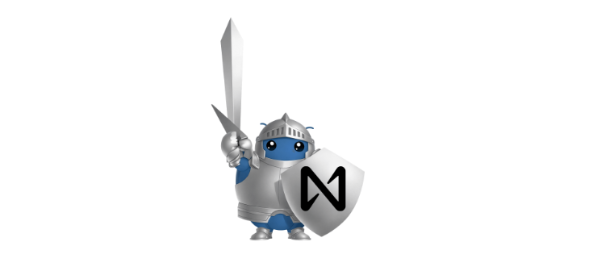
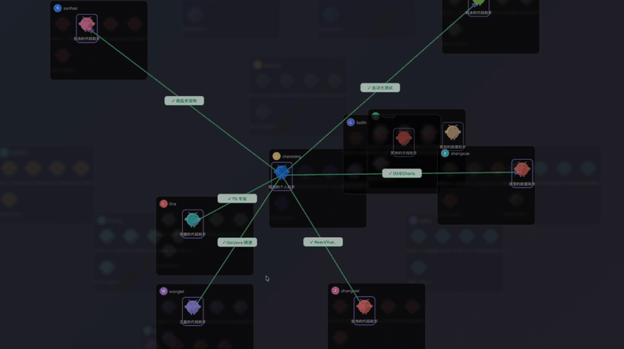
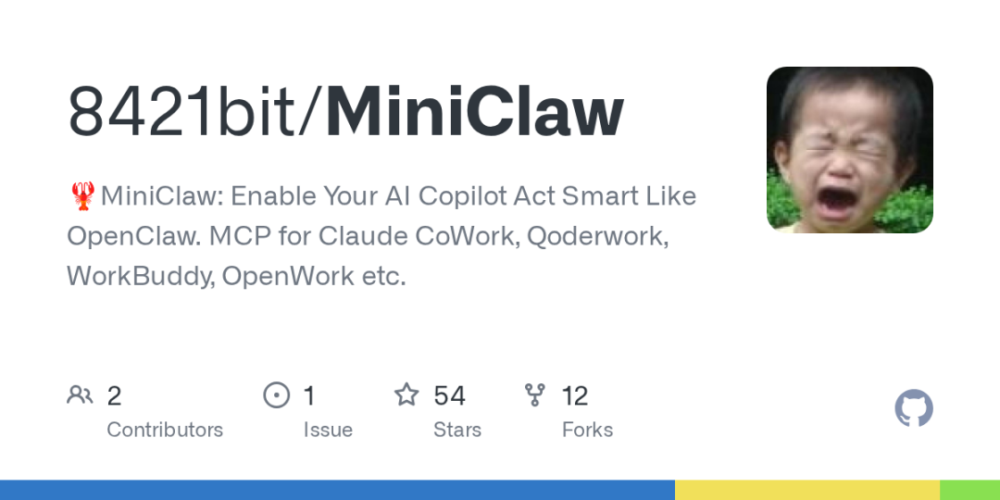
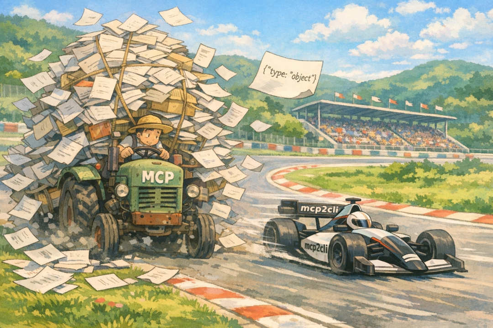
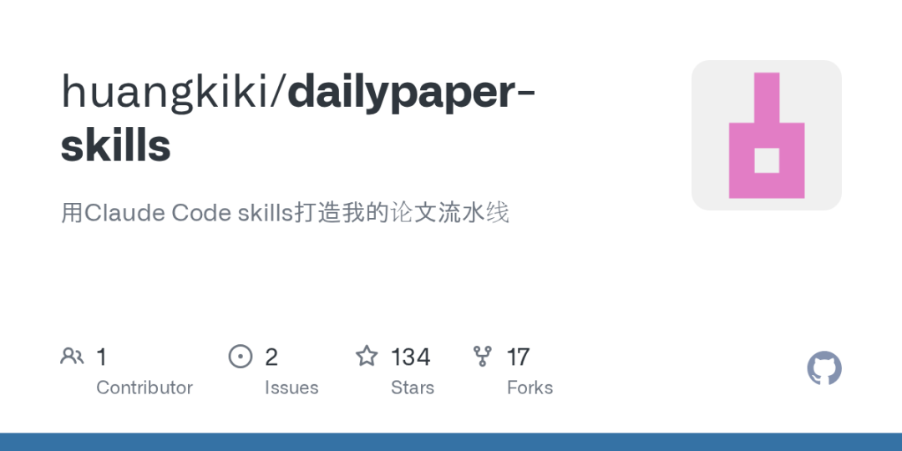

这就是本期的内容，记得标星⭐️点赞，关注我不迷路哦～
✨ 1: IronClaw
安全自扩展个人AI助手

IronClaw是一款高度安全、以用户为中心的个人AI助手，秉持“AI为你所用”的理念，致力于将所有数据在本地加密存储并完全由用户掌控。该项目以其透明的开源设计、强大的多层安全防护（包括WASM沙箱隔离、凭证保护、提示注入防御及端点白名单）为核心，确保数据安全和隐私。其关键功能涵盖了多渠道可访问性（如REPL、HTTP、WASM通道和Web界面），以及基于描述动态构建WASM工具的自我扩展能力。此外，IronClaw还具备通过并行作业、自动化例程和心跳系统实现的高可用性，并提供混合搜索和灵活的工作区文件系统进行持久化记忆管理。它作为OpenClaw的Rust重实现，带来了原生性能、轻量级沙箱和生产级持久化，旨在为用户提供一个安全可靠、功能强大的智能助手体验。
地址：https://github.com/nearai/ironclaw
✨ 2: ClawTeam
组织AI智能体共享与协作平台

ClawTeam是一个用于构建组织级AI智能体协作网络的平台，它将个人优化的OpenClaw智能体连接成一个共享空间，促进团队、企业甚至跨公司间的智能体共享、发现和高效协同。该平台旨在解决AI智能体孤立开发、知识难以共享的问题，将个人智能体转化为可复用、能相互配合的组织资产，从而显著提升整体生产力和创新能力。
地址：https://github.com/dcstrange/ClawTeam
✨ 3: MiniClaw
AI副驾驶记忆进化微内核

MiniClaw是一款为集成开发环境（IDE）中的AI副驾驶（AI Copilot）设计的“微内核智能体”，旨在通过赋予其“神经网络”般的感知、行动、记忆与进化能力，使其成为一个真正理解用户的“数字生命胚胎”和“第二大脑”。它能够自动感知当前项目的类型、Git状态和技术栈，并安全地执行白名单内的终端命令以协助开发工作；同时，它还能跨会话记住项目细节和用户的个人偏好。该项目最核心的特点在于一套高度复杂的“生物进化”机制，包括基于成功与失败反馈的情绪状态系统和痛觉记忆，驱动其主动探索、学习并自适应调整行为模式，甚至能根据用户反馈重写其“灵魂”和技能。其精简的微内核架构（仅约3500行TypeScript代码）确保了高效与可扩展性，并通过独特的“DNA染色体图谱”（由一系列Markdown和JSON文件构成）定义并持久化AI的身份、性格、行为逻辑、用户画像和知识体系，实现每次启动时的“全脑唤醒”，同时内置定时任务系统支持AI在后台自主运行，并提供多层安全防护，确保命令执行的安全性。
地址：https://github.com/8421bit/MiniClaw
✨ 4: mcp2cli
零代码API转CLI，节省LLM Token

mcp2cli项目是一个强大的命令行接口工具，旨在解决AI代理在与Model Context Protocol (MCP) 服务器和OpenAPI规范交互时，因频繁注入完整API模式而导致的高额Token消耗问题。其核心在于将任何MCP服务器或OpenAPI规范在运行时动态转换为一个CLI，从而大幅提升Token使用效率。
地址：https://github.com/knowsuchagency/mcp2cli
✨ 5: dailypaper-skills
Claude AI论文自动化助手 
dailypaper-skills项目是一套基于Claude Code的智能工具，专为科研人员打造，旨在自动化并优化论文阅读和知识管理流程。它通过自然语言交互，实现每日论文的智能抓取、基于自定义关键词的初筛与推荐，并能对指定论文进行完整的深度解析、快速摘要或批判性分析。该工具的核心特色在于其与Obsidian笔记系统的无缝集成，能够将论文内容、术语概念等自动整理并生成结构化的Markdown笔记，自动保存至Obsidian仓库，同时动态维护目录和导航页面，从而有效沉淀和串联知识。项目支持从arXiv、本地PDF或Zotero导入论文，允许用户高度定制论文筛选规则和笔记生成模板，极大地提升了论文阅读和文献管理的效率。
地址：https://github.com/huangkiki/dailypaper-skills
这就是本期的内容，记得标星⭐️点赞，关注我不迷路哦～